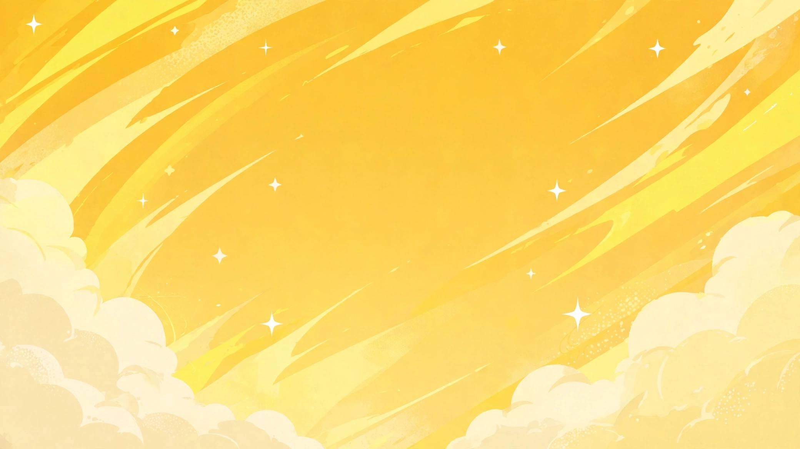
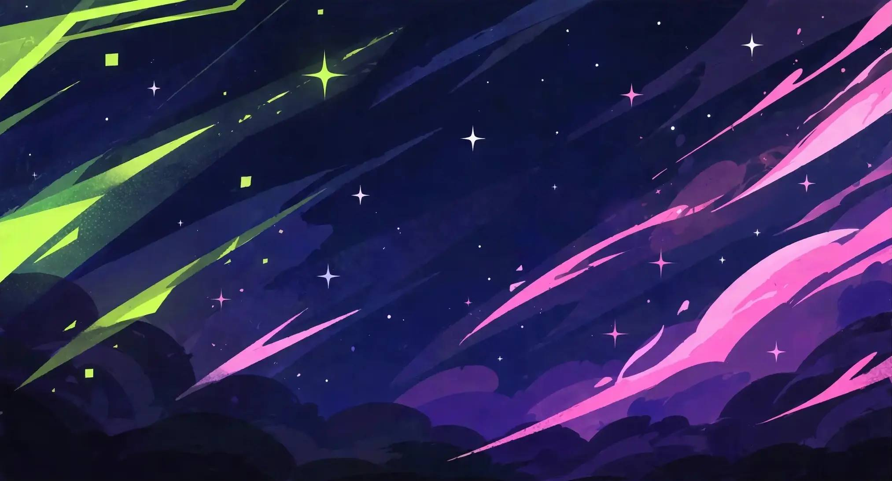

01
Surging
what the board is bidding up right now, ranked by acceleration
- 01--loading the board…—
Pick five creators off Motion's public leaderboard before the next window closes. Say why each one wins and what would prove you wrong. The server grades every pick against the snapshot that closes the window. Nothing gets edited after the fact.

The full Motion leaderboard, live from the official API. Rank, 4-hour movement and an estimated star rating — labelled as an estimate, because Motion Score itself is not public.

Five different creators under a 32-star cap. Every pick needs a reason it happens and a reason it fails — a lineup without reasoning is not a call.

Locking files the lineup under your X account and the server grades it against the next window. One receipt per handle per slot, so nobody re-rolls until one hits.
what the board is bidding up right now, ranked by acceleration
flat for days with the crowd gone quiet — the setup, not the move
scored low by the board while the work keeps landing
thin windows, no story — the honest middle of the board
momentum leaving faster than the rank shows
The complete Motion leaderboard, read from the official API. Nothing cherry-picked — if the board scores a creator, they are in the room and can be drafted.
One snapshot per 4-hour window, kept as its own file. A window we missed stays missed: the record is never backfilled, so a short history is the honest one.
Motion re-scores the board every four hours on weekdays. That cadence is what a receipt is graded against — the lock is a promise to a specific window, not to a vague “soon”.
Five creators, thirty-two stars, no exceptions. The cap is what makes a call a decision: you cannot take every favourite, so the reasoning has to carry the choices you leave out.
One page per call. What you believed, what you risked, and what the board said when the window shut.
leaderboard.motion.game/api/leaderboard (official, unauthenticated) — the fields position, delta (4-hour rank change), isNew, plus asOf. A GitHub Actions cron snapshots all 79 creators every 4 hours onto the data branch, and this page reads those snapshots. History starts the day the collector started; when a window has too few slots the field shows —, never a made-up number.data/receipts.json on the data branch through /api/receipts, and the server grades it against the snapshot on record, so a visitor cannot submit their own score. One receipt per handle per slot, so nobody can keep re-rolling a lineup until one hits.